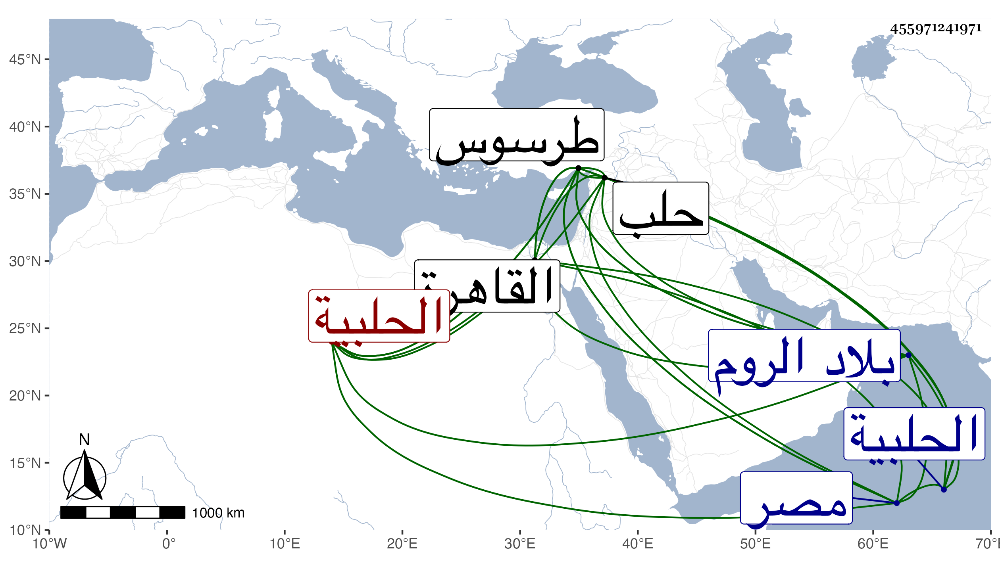

0902Sakhawi.DawLamic.ITO20230111-ara1.EIS1600.455971241971
Biography ID: 455971241971
531
محمد بك بن علي بك بن قرمان ناصر الدين والد ابراهيم الماضي ويعرف بابن قرمان . كان أميرا بقصرية ونكدة ولاريدة وما والاها من البلاد الحلبية وغيرها ثم امتدت عينه إلى أخذ طرسوس وهي من معاملات حلب وطمع فيها لوقوع الاختلاف بين الامراء المصرية فحاصرها وملكها فلما استقر المؤيد جهز اليه عسكرا فاستنقذوها منه وقرر بها نائبا ثم جمع ابن قرمان جيشا وأخذها فجهز إليه المؤيد في سنة اثنتين وعشرين ابنه الصارمي ابرهيم في عسكرها بل لحربه ومعه الامير ناصر الدين محمد بك بن دلغادر صاحب أبلستين فطرق بلاده نهبا وأسرا وسلموا طرسوس بأمر المؤيد لابن دلغادر المذكور واستقر في البلاد القرمانية أخوه على بن دلغادر وفر صاحب الترجمة والتجأ لقلعة لارندة وحوصر مدة إلى أن رجع الصارمي إلى الديار المصرية وابن دلغادر إلى محل اقامته فعاد إلى بلاده وجمع جمعا كبيرا ثم مشى على بلاد ابن دلغادر بغتة فثبت له وقاتله إلى أن انتصر وقتل مصطفى ابن صاحب الترجمة في الوقعة فحملت رأسه إلى القاهرة في سادس عشر رمضان منها ثم حمل أبوه إليها مقيدا فسجن بها حتى مات المؤيد في أوائل سنة أربع وعشرين فأطلقه ططر وولاه بلاده فتوجه اليها وأقام بها مدة إلى أن سار لحرب خوندكار مرادبك بن عثمان متملك الروم ايضا ونزل على بعض قلاع ابن عثمان وحصرها اياما إلى أن أصابه حجر مدفع من القلعة صرعه فحمل ومات في صفر سنة ست وعشرين . وأرخه شيخنا في السنة قبلها ، وطوله ابن خطيب الناصرية وقال إنه مات فيها يعني سنة أربع وعشرين أو في التي بعدها من حجر أصابه وهو يحاصر قلعة هتاك واستقر بعده ابنه إبرهيم الماضي .
